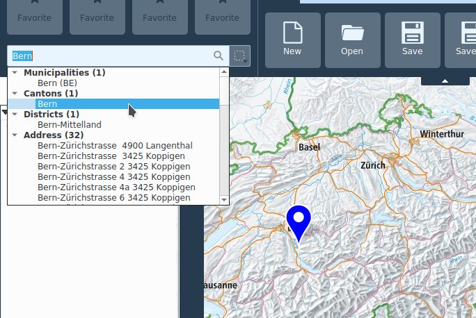

Suche und Stecknadeln
Suche
Das Suchfeld bietet eine einheitliche Schnittstelle für verschiedene Suchdienste:
Koordinaten (LV03, LV95, DD, DM, DMS, UTM, MGRS)
Ortschaften und Adressen schweizweit
Ortschaften weltweit
Attribute in lokale Datensätze
Attribute in remote Datensätze (Web-Dienste)
Attribute in Stecknadeln
Nach der Eingabe von mindestens drei Buchstaben startet die Suche und es werden erste Resultate angezeigt.
Die Resultate werden in entsprechend bezeichnete Kategorien aufgelistet. Die Resultatliste kann mit Maus oder Tastatur-Pfeile durchsucht werden. Beim Auswählen eines Resultats mit den Pfeilen wird eine blaue Stecknadel an den entsprechenden Ort gesetzt. Beim aktivieren eines Resultats mit der Maus wird der Kartenausschnitt auf den entsprechenden Ort zentriert.

Rechts vom Suchfeld gibt es die Möglichkeit, einen Filter für die lokale und remote Datensatz-Suche zu definieren. Dieser Filter greift nicht für Koordinaten, Ortschaft oder Stecknadelsuchen.
Stecknadeln
Das Werkzeug zum Platzieren von Stecknadeln befindet sich in der Registerkarte Zeichnen. Im Tooltip einer platzierten Stecknadel können Position und Höhe abgelesen werden. Ein Doppelklick auf die Stecknadel öffnet dessen Attributdialog. Web-Links können von einem Webbrowser in das Textfeld kopiert werden. Per Rechtsklick auf die Stecknadel kann dessen Position in die Zwischenablage kopiert werden.